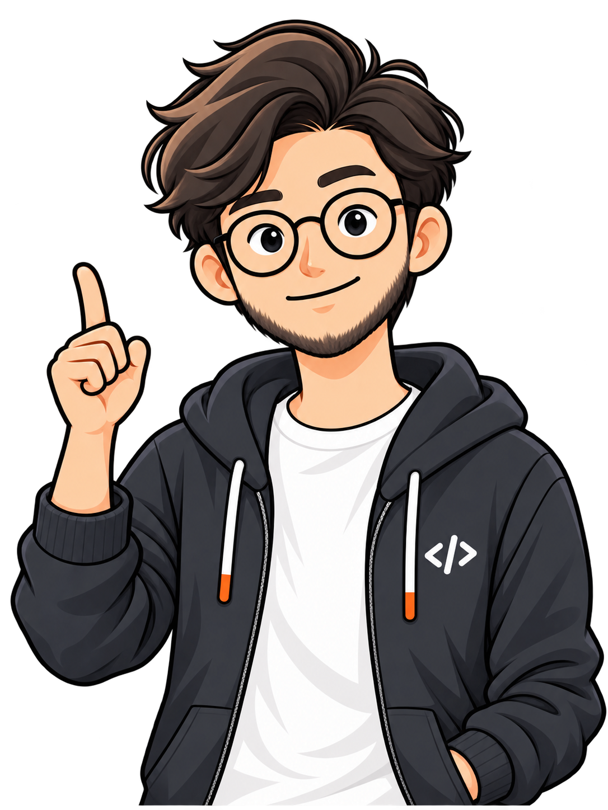

<!doctype html>
<html lang="zh-CN">
<meta charset="utf-8">
<meta name="viewport" content="width=device-width,initial-scale=1">
<title>PNG → SVG → 动画 · 技术验证</title>
<style>
*{box-sizing:border-box}body{margin:0;background:#10151c;color:#e9eef5;font-family:Inter,-apple-system,BlinkMacSystemFont,"PingFang SC",sans-serif}main{max-width:1200px;margin:auto;padding:36px 32px 28px}.eyebrow{color:#a9e0bd;font-size:12px;letter-spacing:2px}h1{font-size:30px;letter-spacing:-1px;margin:12px 0}p{color:#a7b2c2;font-size:14px;line-height:1.7;margin:0 0 24px}.grid{display:grid;grid-template-columns:1fr 1fr;gap:20px}.card{border:1px solid #303c4a;border-radius:16px;overflow:hidden;background:#19222c}.label{display:flex;justify-content:space-between;padding:15px 18px;border-bottom:1px solid #303c4a;font-size:13px}.tag{font-size:11px;color:#a9e0bd}.canvas{height:535px;background-color:#202b37;background-image:linear-gradient(45deg,#263340 25%,transparent 25%),linear-gradient(-45deg,#263340 25%,transparent 25%),linear-gradient(45deg,transparent 75%,#263340 75%),linear-gradient(-45deg,transparent 75%,#263340 75%);background-size:24px 24px;background-position:0 0,0 12px,12px -12px,-12px 0;display:flex;align-items:center;justify-content:center}.canvas img,.canvas svg{height:100%;max-width:100%;object-fit:contain}#stage{width:100%;height:535px;display:flex;align-items:center;justify-content:center;background:#202b37;overflow:hidden}.controls{margin-top:20px;background:#19222c;border:1px solid #303c4a;border-radius:14px;padding:18px;display:flex;align-items:center;gap:14px;flex-wrap:wrap}button,select{background:#293747;color:#e9eef5;border:1px solid #42566b;border-radius:7px;padding:9px 12px;font:inherit;font-size:12px}button{cursor:pointer}button.primary{background:#b3edc7;color:#163023;border:0;font-weight:600}input[type=range]{flex:1;min-width:160px;accent-color:#b3edc7}output{font-variant-numeric:tabular-nums;color:#c5d1df;font-size:12px;min-width:95px}.manual{display:flex;align-items:center;gap:10px;flex-wrap:wrap;margin-top:14px;font-size:12px;color:#abb7c7}.manual label{display:flex;align-items:center;gap:7px}footer{font-size:12px;color:#8796a7;margin-top:17px;line-height:1.8}.status{color:#b3edc7}a{color:#b3edc7}@media(max-width:800px){main{padding:20px}.grid{grid-template-columns:1fr}.canvas,#stage{height:480px}}
</style>
<main>
<div class="eyebrow">CHARACTER LAB / 01</div>
<h1>同一张人物，从图片到可控动画</h1>
<p>原图描摹为真实 SVG 路径，保留人物细节；独立控制嘴型、眼皮与指向手臂。8 秒循环，30 帧 / 秒，无语音。</p>
<div class="grid">
<section class="card"><div class="label"><span>01 / 原始 PNG</span><span class="tag">1086 × 1448</span></div><div class="canvas"></div></section>
<section class="card"><div class="label"><span>02 / 分层 SVG 动画</span><span class="tag" id="state">载入中</span></div><div class="canvas"><div id="stage"></div></div></section>
</div>
<div class="controls"><button id="play" class="primary">暂停</button><button id="reset">重播</button><input id="scrub" aria-label="时间轴" type="range" min="0" max="239" value="0" step="1"><output id="time">0.00 / 8.00 s</output><button id="save">导出当前 SVG</button></div>
<div class="manual"><span>独立图层检查</span><label>嘴型<select id="mouth-select"><option value="auto">自动</option><option value="closed">闭嘴</option><option value="small">小开口</option><option value="open">大开口</option><option value="round">圆口</option></select></label><label>眼睛<select id="eye-select"><option value="auto">自动</option><option value="open">睁眼</option><option value="closed">闭眼</option></select></label><label>手臂<select id="arm-select"><option value="auto">自动</option><option value="0">原位</option><option value="-4">抬起 −4°</option><option value="3">放下 +3°</option></select></label><button id="neutral">对比原位</button></div>
<footer><span class="status" id="stats"></span><br>验证范围：真实路径矢量化、人工语义拆层、四嘴型、眨眼、手腕轻微摆动、逐帧确定性控制。<br>当前手势来自原图的指向动作；完整换手势与大幅肢体运动仍需补画素材和关节。皮肤修补与眼皮属人工重建，放大检查可见局部风格差异。</footer>
</main>
<script>
const FPS=30,DURATION=240;
let frame=0,playing=true,previous=performance.now(),accumulator=0,svg;
const stage=document.querySelector('#stage'),scrub=document.querySelector('#scrub');
const mouthSelect=document.querySelector('#mouth-select'),eyeSelect=document.querySelector('#eye-select'),armSelect=document.querySelector('#arm-select');
const ids=['closed','small','open','round'];
function timeline(f){
 const t=f/FPS;
 const talking=t>.7&&t<3.25||t>4&&t<7.1;
 const sequence=['small','open','small','closed','round','small','open','closed'];
 const mouth=talking?sequence[Math.floor(t*7)%sequence.length]:'closed';
 const blink=[48,115,192,222].some(start=>f>=start&&f<start+4);
 const arm=t<1.2?0:t<3.5?-4*Math.sin(Math.PI*(t-1.2)/2.3):t>4.4&&t<6.4?3*Math.sin(Math.PI*(t-4.4)/2):0;
 return{mouth,blink,arm};
}
window.setFrame=function(value){
 frame=((Math.floor(value)%DURATION)+DURATION)%DURATION;
 if(!svg)return;
 const state=timeline(frame);
 if(mouthSelect.value!=='auto')state.mouth=mouthSelect.value;
 if(eyeSelect.value!=='auto')state.blink=eyeSelect.value==='closed';
 if(armSelect.value!=='auto')state.arm=Number(armSelect.value);
 ids.forEach(id=>svg.querySelector('#mouth-'+id).setAttribute('visibility',state.mouth===id?'visible':'hidden'));
 svg.querySelector('#eyelids').setAttribute('visibility',state.blink?'visible':'hidden');
 svg.querySelector('#pointing-arm').setAttribute('transform',`rotate(${state.arm.toFixed(4)} 147 894)`);
 scrub.value=frame;document.querySelector('#time').value=`${(frame/FPS).toFixed(2)} / 8.00 s`;
 document.querySelector('#state').textContent=`${state.mouth} / ${state.blink?'blink':'eyes open'}`;
 window.currentFrameState={frame,...state};
 return window.currentFrameState;
};
window.pauseAnimation=()=>{playing=false;document.querySelector('#play').textContent='播放'};
document.querySelector('#play').onclick=()=>{playing=!playing;document.querySelector('#play').textContent=playing?'暂停':'播放';previous=performance.now();accumulator=0};
document.querySelector('#reset').onclick=()=>window.setFrame(0);
scrub.oninput=()=>{window.pauseAnimation();window.setFrame(Number(scrub.value))};
[mouthSelect,eyeSelect,armSelect].forEach(el=>el.onchange=()=>window.setFrame(frame));
document.querySelector('#neutral').onclick=()=>{window.pauseAnimation();mouthSelect.value='closed';eyeSelect.value='open';armSelect.value='0';window.setFrame(0)};
document.querySelector('#save').onclick=()=>{const url=URL.createObjectURL(new Blob([new XMLSerializer().serializeToString(svg)],{type:'image/svg+xml'}));const a=document.createElement('a');a.href=url;a.download=`character-frame-${frame}.svg`;a.click();setTimeout(()=>URL.revokeObjectURL(url),1000)};
Promise.all([fetch('character.svg').then(r=>r.text()),fetch('build-info.json').then(r=>r.json())]).then(([text,info])=>{stage.innerHTML=text;svg=stage.querySelector('svg');svg.setAttribute('width','100%');svg.setAttribute('height','100%');document.querySelector('#stats').textContent=`${(info.body_paths+info.arm_paths).toLocaleString()} 条描摹路径 · ${(info.svg_bytes/1024/1024).toFixed(2)} MB · SVG 中没有嵌入位图`;window.setFrame(0);window.svgHostReady=true});
function tick(now){if(playing&&svg){accumulator+=Math.min(now-previous,100);const steps=Math.floor(accumulator/(1000/FPS));if(steps){accumulator-=steps*1000/FPS;window.setFrame(frame+steps)}}previous=now;requestAnimationFrame(tick)}requestAnimationFrame(tick);
</script>
</html>
